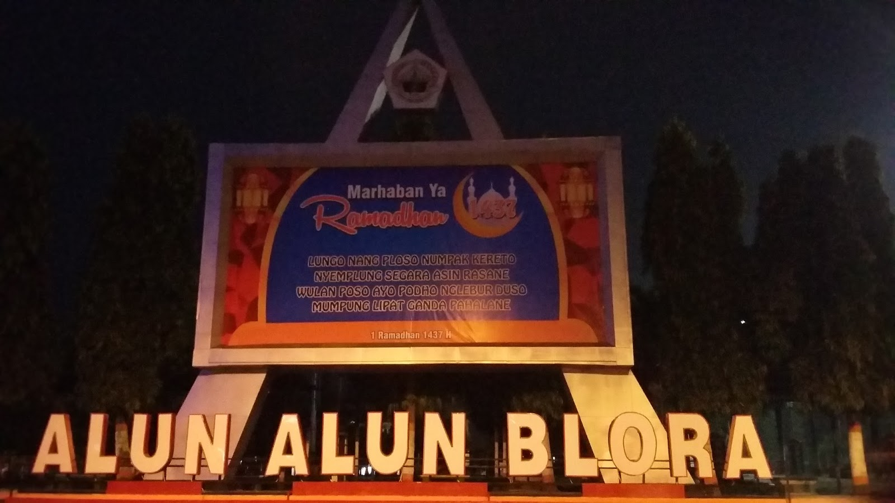
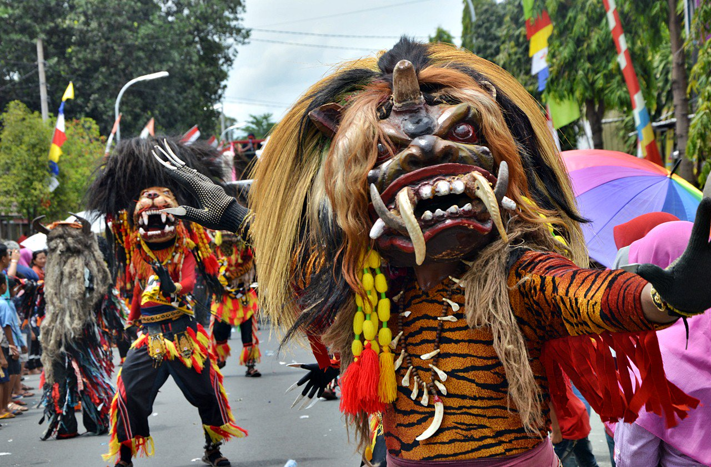
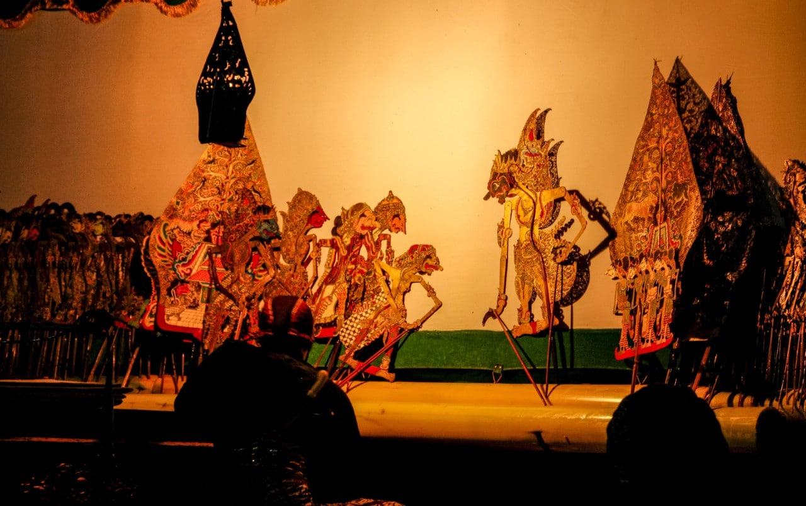

Beranda
Daftar Kecamatan
Wisata Blora
Aspirasi Rakyat
☰



Beberapa Wisata Yang Ada di Kabupaten Blora
Goa Terawang Todanan Blora
Waduk Greneng Blora
Gunung Manggir Todanan Blora
Taman Budaya dan Seni Tirtonadi
Kedung Londo
Kedung Banyu Biru
Baca juga :
Makna Lambang Kabupaten Blora
Seni Barongan Blora
Wedang Cemohe Khas Blora
Upah Minimum Kabupaten Blora